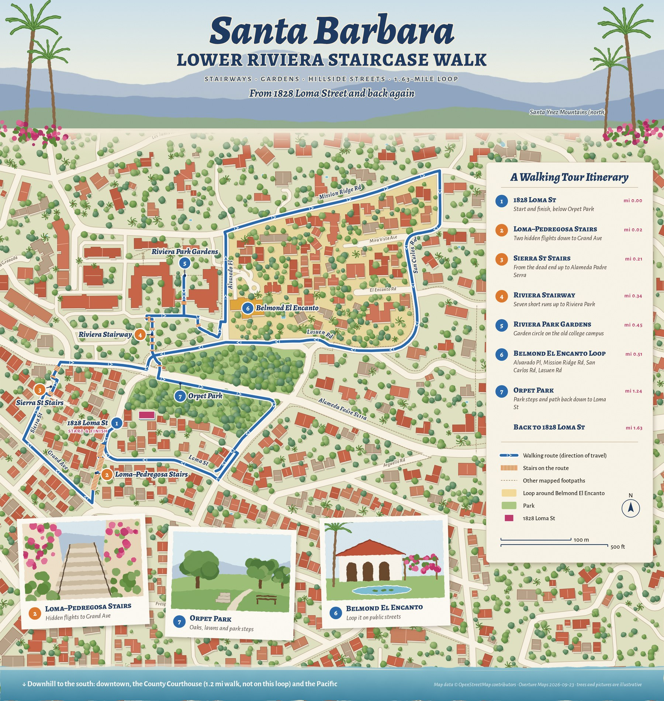

claude-play
Small apps and one-off work made with Claude Code. Each one lives in its own folder.
-

sb-riviera-walk/Riviera Staircase Walk
A 1.63-mile loop from 1828 Loma St over five stairways in Santa Barbara, with a live GPS blue dot on an accurate illustrated map.